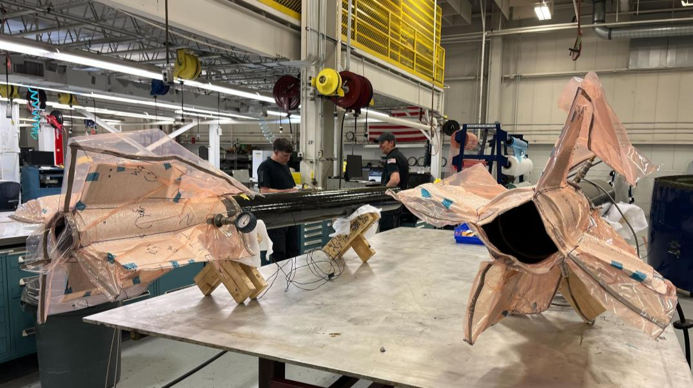
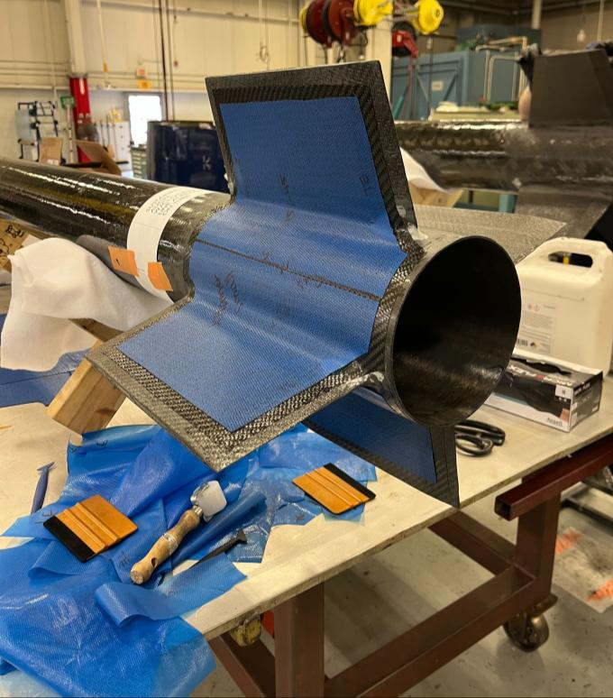
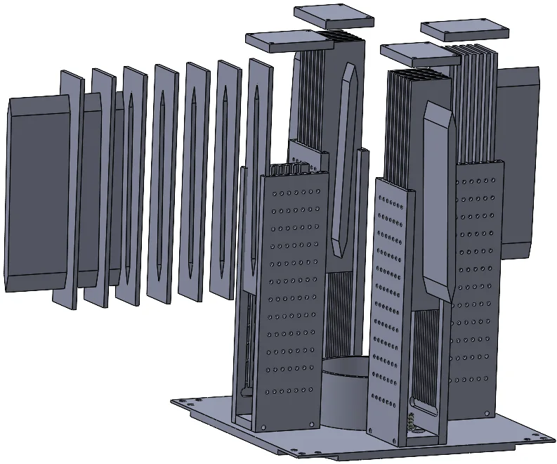
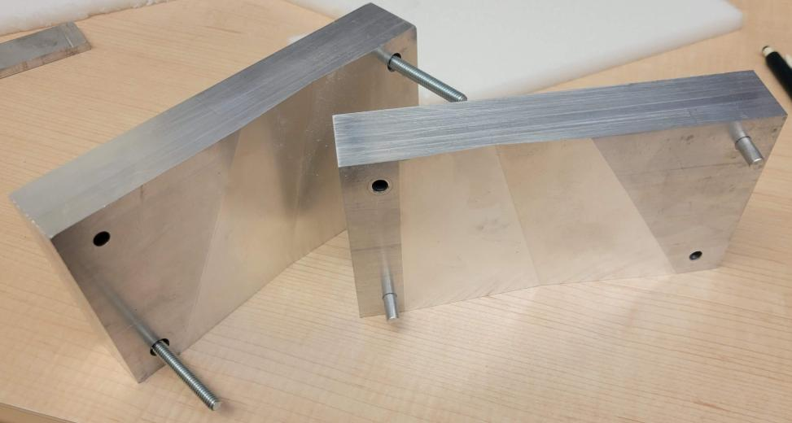
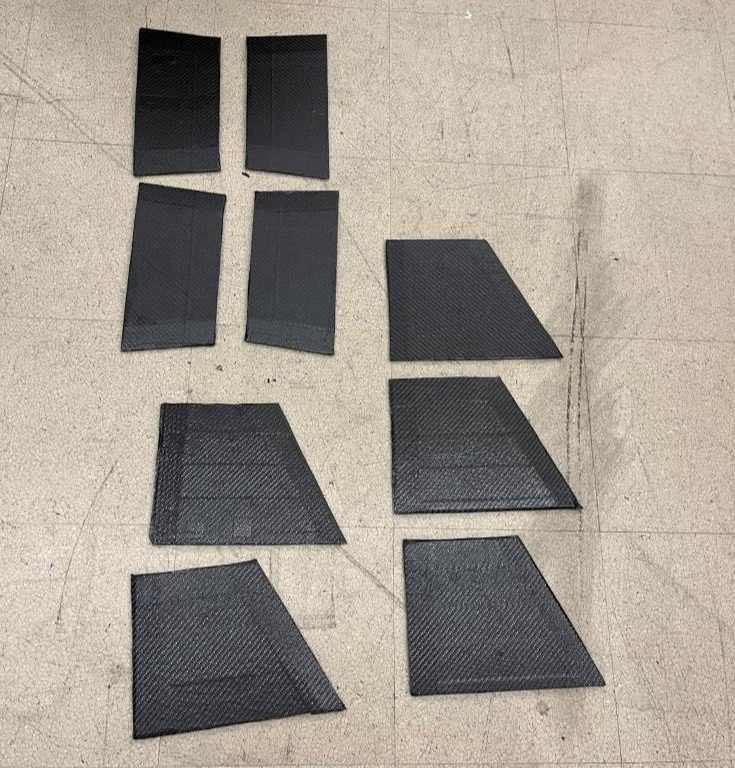
Aerospace Engineering Portfolio
Georgia Tech aerospace engineer focused on where design meets the shop floor: precision tooling, composites manufacturing, and flight hardware for experimental rockets.
I'm an aerospace engineering student at Georgia Tech who likes to be where the design meets the shop floor. As the Fin Design & Manufacturing Lead for Georgia Tech Experimental Rocketry (GTXR), I've spent two years taking composite fin structures from high-level design and flutter analysis all the way to machined tooling and cured flight hardware.
I'm currently a manufacturing engineering intern at Blue Origin, developing tooling for the Blue Moon program. Previously, at Pursuit Aerospace, I designed quick-change fixtures and quick-check gauges and developed a documented supercleaning process, consistently cutting cycle time and cost on production parts.
I'm most at home with CNC machining, composites layup, GD&T, and design-for-manufacture. I care about tight tolerances, repeatable processes, and designs the next person can actually build.
Blue Origin
Pursuit Aerospace · Newburyport, MA
Georgia Tech Experimental Rocketry (GTXR) · Atlanta, GA
Ben T. Zinn Combustion Laboratory · Atlanta, GA
Vertical Lift Research Center of Excellence (VLRCOE) · Atlanta, GA
Co-authored Shear Modulus Testing in Composite Sandwich Panels, published in the AIAA Journal and presented at the AIAA Region II Student Conference.
Co-authored Viability of Thermoformed Closed-Cell Foam Cores for Carbon Fiber Sandwich Rocket Fins, presented at the AIAA Region II Student Conference; forthcoming in the AIAA Journal.





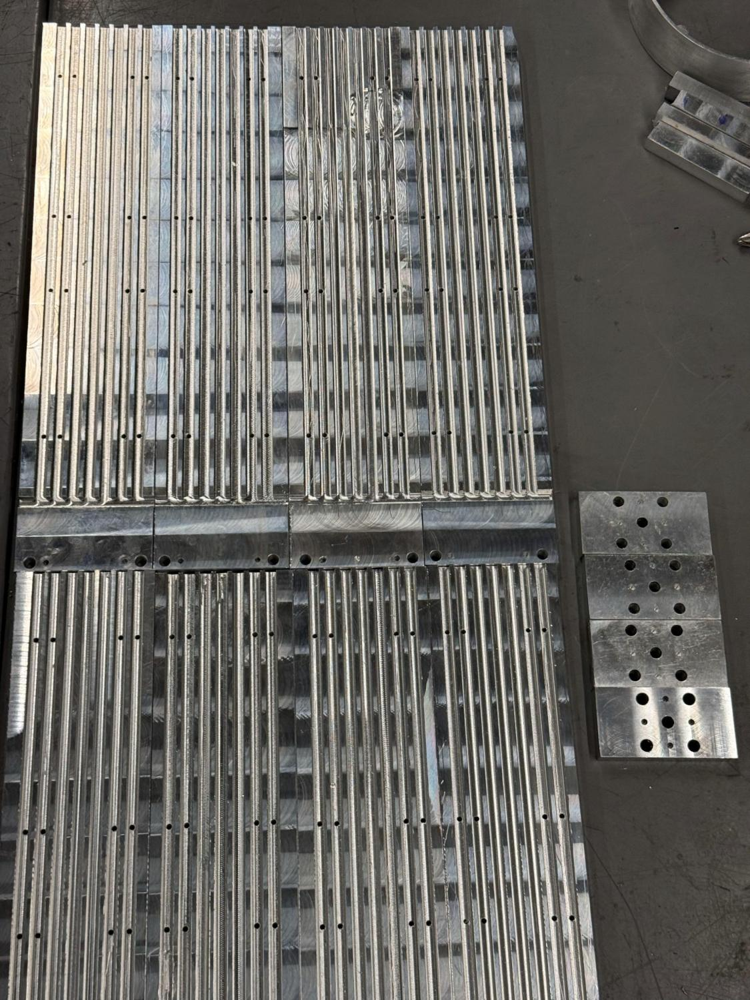
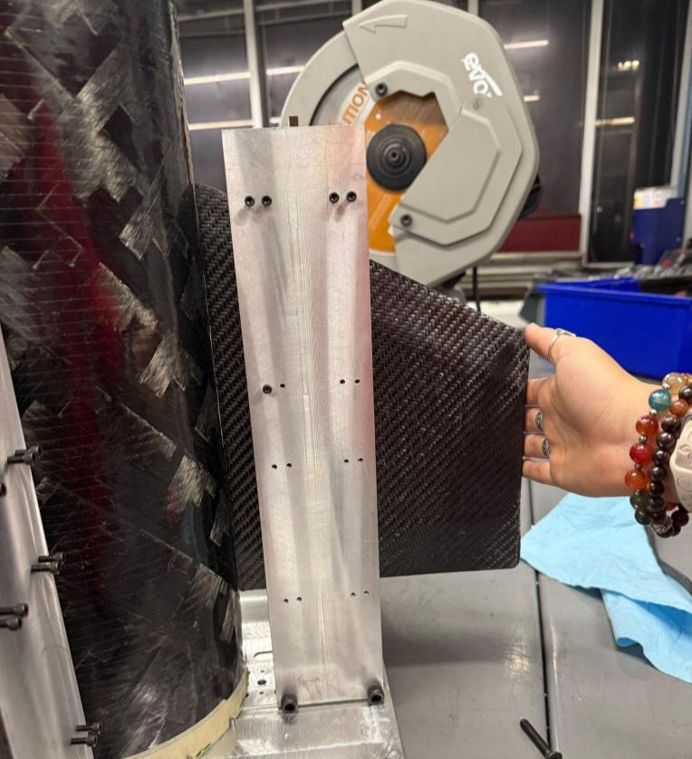
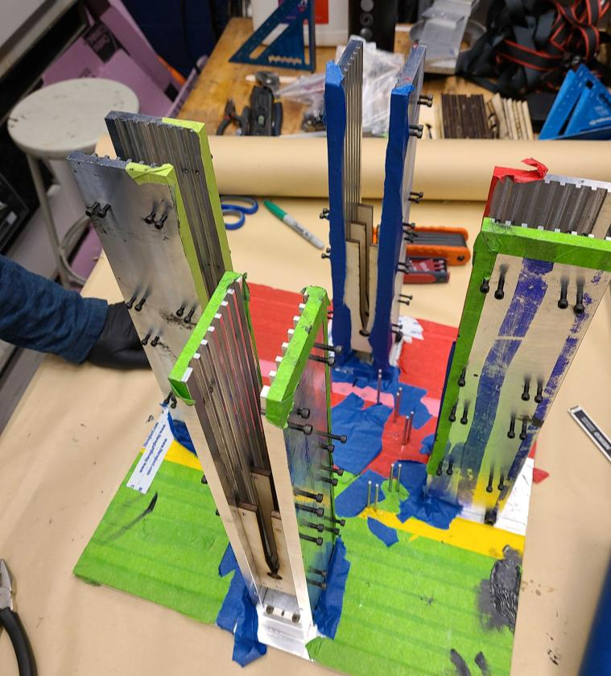
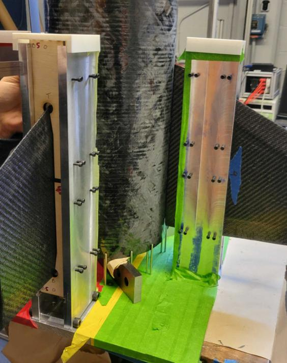
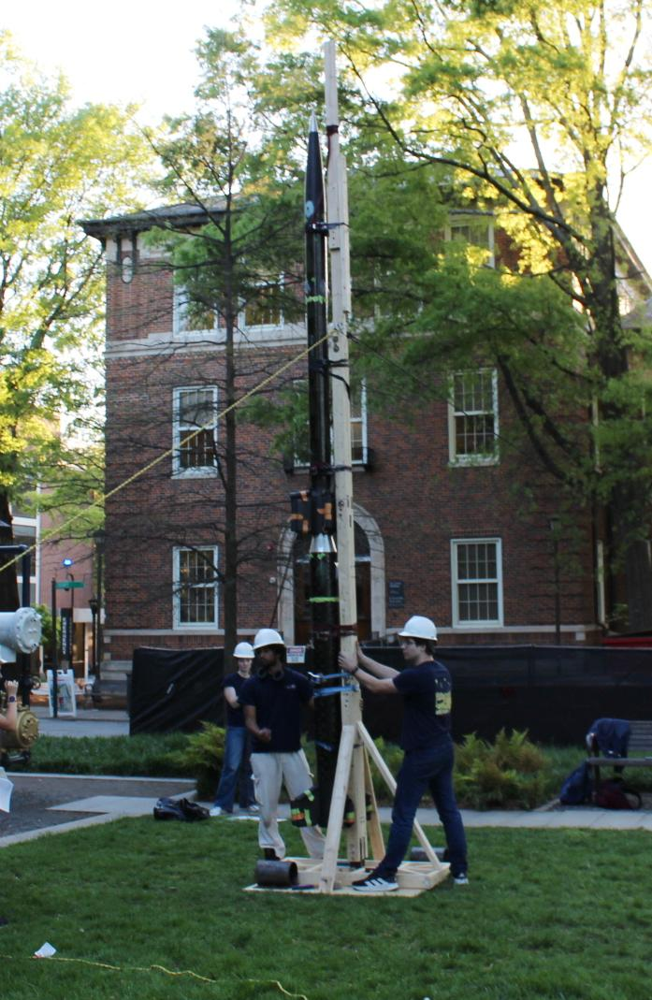
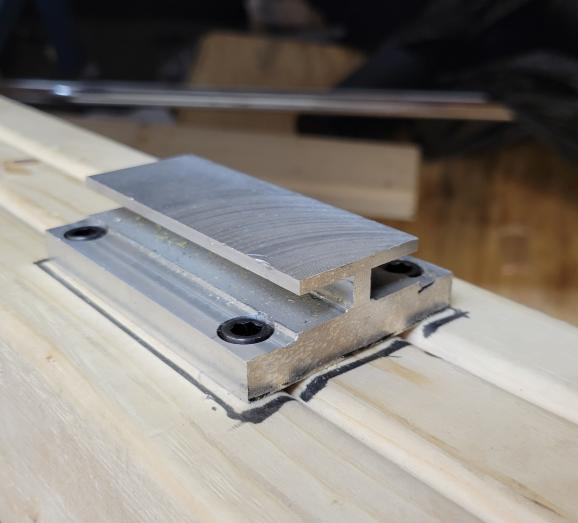
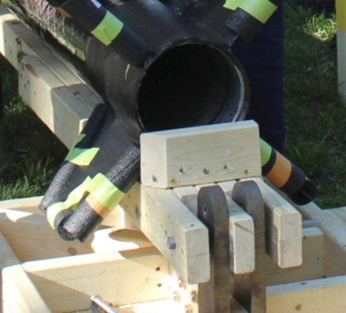
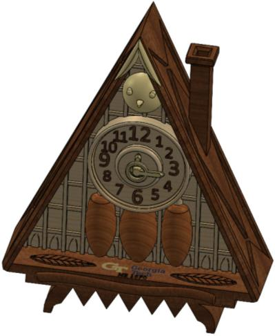
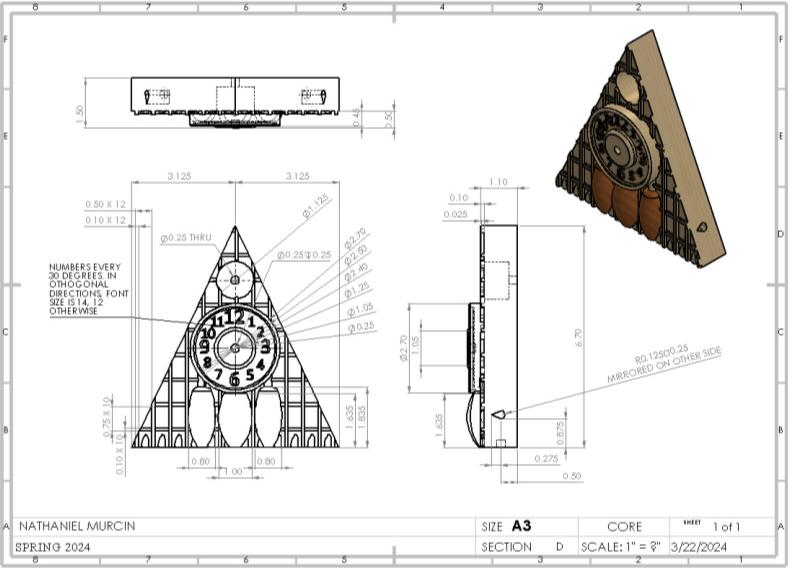
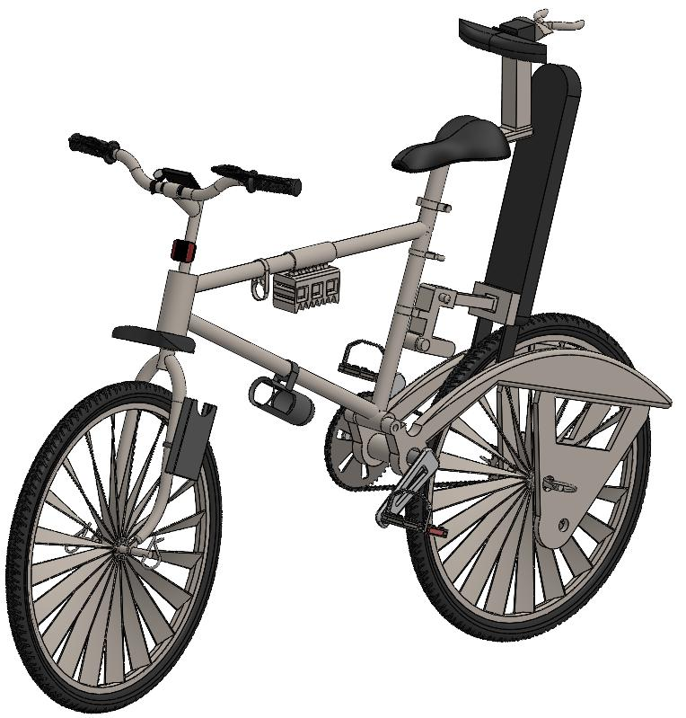
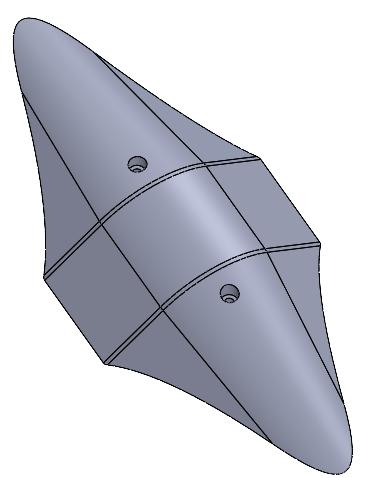
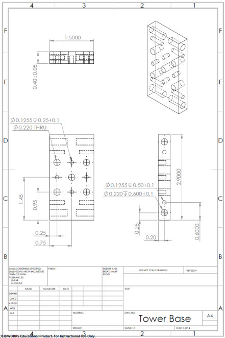
Interested in talking? I'd love to hear from you.